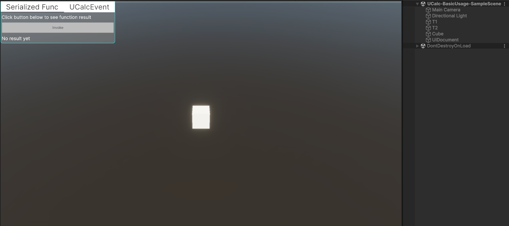
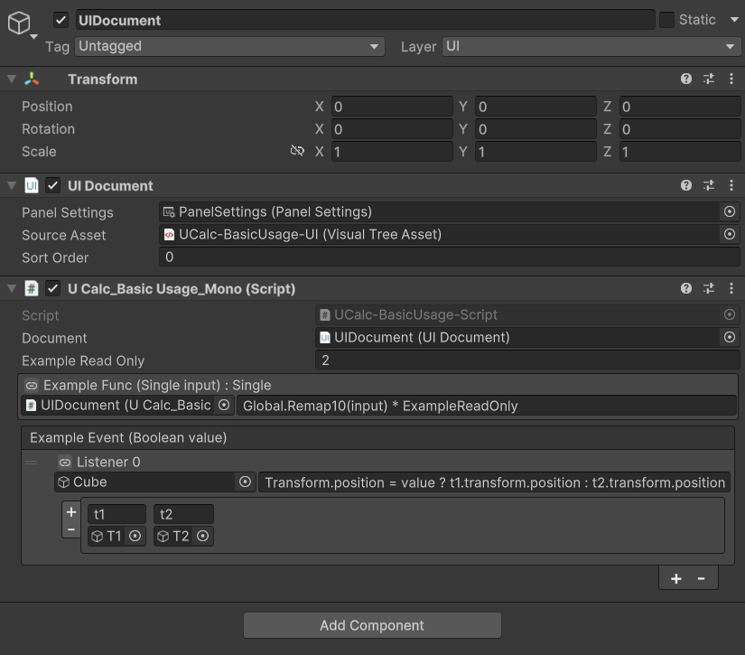

Basic Usage Sample
This sample demonstrates how to use UCalc serialized expressions in a real Unity scene.
It shows how to:
- evaluate a
SerializedFunc - invoke a
UCalcEvent - reference dependencies
- use global symbols
- use
UCalcReadOnlyandUCalcHidden - write expressions directly in the Inspector
Scene Overview
The sample scene contains:
- UI buttons used to invoke expressions
- a cube that moves based on event logic
- two Transform reference objects used as target positions
The logic is implemented in the UCalc_BasicUsage_Script.cs file.


Example Function
The sample includes a serialized function:
[SerializeField] SerializedFunc<float, float> m_ExampleFunc;
Argument name:
input
Expression used in the sample:
Global.Remap10(input) * ExampleReadOnly
When you press InvokeFunc, the function is executed with a random value.
The result is displayed in the UI.
This demonstrates:
calling global functions
reading owner members
passing arguments to expressions
Global Symbols
The sample includes a custom global provider:
[UCalcGlobalContext("Global")]
public static class UCalc_BasicUsage_Global
{
public static float Remap10(float value)
=> Mathf.Lerp(0, 10, Mathf.Clamp01(value));
}
This exposes the function:
Global.Remap10(value)
which is used in the function example.
Example Event
The sample also demonstrates UCalcEvent<bool>.
[SerializeField] UCalcEvent<bool> m_ExampleEvent;
When InvokeEvent is pressed, the event is invoked using the value of the toggle.
The persistent listener expression used in the sample:
Transform.position = value ? t1.transform.position : t2.transform.position
This expression:
reads the event argument (
value)accesses dependencies (
t1,t2)modifies the owner's transform
As a result, the cube moves between the two reference positions.
Dependencies
The event expression references two external objects.
These are added as dependencies:
| Name | Object |
|---|---|
| t1 | T1 (Game Object) |
| t2 | T2 (Game Object) |
Dependencies allow expressions to access external objects without exposing them on the owner component.
Attribute Examples
The sample also demonstrates several attributes.
UCalcHidden
[UCalcHidden]
public UIDocument Document;
This prevents the member from being available inside expressions despite being public.
UCalcReadOnly
[UCalcReadOnly]
public int ExampleReadOnly;
This member can be read by expressions but cannot be modified.
ArgNames
[ArgNames("input")]
Provides a readable argument name for the serialized lambda.
Try It Yourself
Open the scene and press Play.
You can experiment by:
modifying the function expression (also during play-mode)
adding more event listeners
changing dependency objects
editing argument names
creating new expressions
This allows you to quickly explore how UCalc expressions interact with Unity objects.